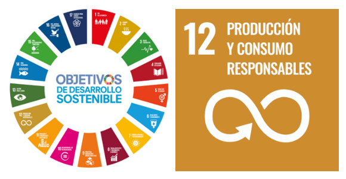
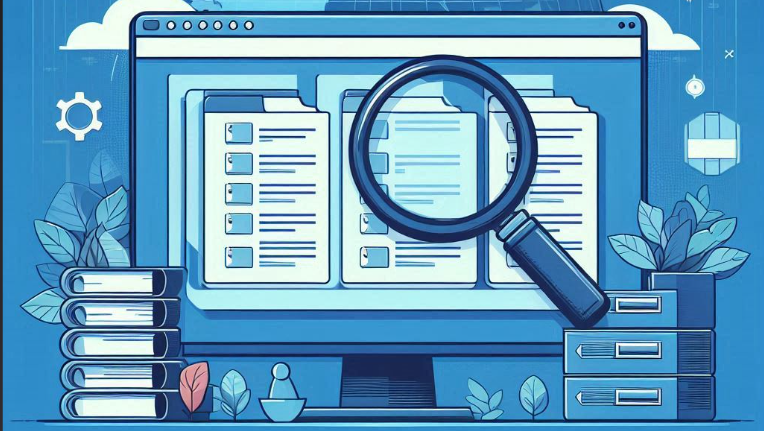
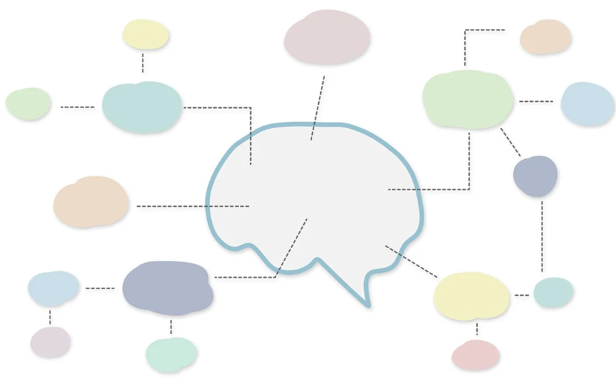
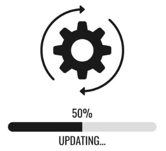

Requisitos de la campaña
Como hemos visto en la introducción, la empresa de gestión de residuos de nuestra ciudad nos ha pedido ayuda para realizar una campaña para motivar y animar a las personas a reutilizar y reciclar.
Los requisitos que piden para dicha campaña son:
- Que requiera interactividad para motivar a las personas a que la usen y reutilicen o reciclen.
- Que muestre información relevante acerca de, al menos, el objetivo de desarrollo sostenible número 12, Producción y consumo responsable.
- Que incluya ejemplos de acciones que contribuyan a fomentar el reciclaje o la reutilización de objetos.
Para cumplir con el primero de los requisitos nuestro equipo, formado por varias personas expertas, va a elaborar su propia propuesta consistente en la creación de una historia interactiva usando para ello una de las herramientas de programación que hemos aprendido a utilizar anteriormente: Scratch.
Objetivos
Los objetivos que pretendemos alcanzar con la realización de esta situación de aprendizaje son:
- Comprender los conceptos básicos de programación en bloques.
- Aplicar el pensamiento lógico y algoritmos en la creación de una historia interactiva.
- Utilizar los diferentes bloques y comandos de Scratch para programar personajes y acciones.
- Fomentar el trabajo en equipo y la colaboración en la creación de la historia.
- Desarrollar habilidades de resolución de problemas y creatividad a través del proceso de programación en Scratch.
- Fomentar el conocimiento y trabajo en uno de los Objetivos de Desarrollo Sostenible: Producción y consumo responsable.

Análisis de la información
Antes de pensar en la historia interactiva que vamos a programar con Scratch es necesario buscar información para comprender mejor los problemas a los que se enfrentan las ciudades en materia de residuos y su impacto ambiental así como conocer el Objetivo de Desarrollo Sostenible 12 (Producción y consumo sostenible).
Algunos ejemplos de información que puede ser interesante investigar son:
- De qué trata el ODS número 12.
- Qué metas de este ODS están relacionado con el problema.
- Cuáles son los principales problemas del reciclaje o la reutilización.
- Cómo afecta al medio ambiente no reutilizar objetos que puedan tener una segunda vida.
Es importante que, a la hora de buscar información, utilicemos siempre fuentes fiables.
Anotamos toda esta información en un documento en el que registraremos todo nuestro proceso de trabajo.

Planificamos nuestra historia

Una vez que tengamos toda la información, la hayamos puesto en común y todo el equipo esté de acuerdo, vamos a pensar ideas originales para desarrollar nuestra historia interactiva. Una buena práctica antes de empezar puede ser la realización de una lluvia de ideas entre las personas del grupo.
Una vez que hayamos alcanzado un consenso en la idea a desarrollar es hora de crear un guion para nuestra historia que anotamos en el documento en el que estamos registrando todo nuestro trabajo.
Para hacer interesante nuestra historia es importante tener en cuenta varios elementos. Debemos optar por un tema interesante a partir del cual desarrollar los escenarios en los que se encuentran los personajes, seleccionar la música de fondo, la sincronización del diálogo, la aparición de los personajes, elegir los momentos para que suenen determinados sonidos, entre otros. Cuanto mejor tengas pensado tu historia, más enriquecido estará tu guion.
Programamos nuestra historia
Cuando tengamos todo preparado, comenzamos con la programación en Scratch. Para ello, es conveniente tener en cuenta los puntos siguientes:
1. Momentos de la historia
Piensa en tu historia: ¿cómo te gustaría que se viera animada?
Un primer paso para empezar a convertir tu historia en una animación es identificar sus diferentes momentos o escenas. Visualiza los diferentes escenarios y la acción que se va a llevar a cabo en cada uno de ellos.
Por ejemplo: puedes sintetizarla en cuatro momentos que se correspondan con cuatro escenarios, y programar lo que ocurrirá en cada uno. Recuerda todos los recursos que facilita Scratch: permite trabajar con escenarios, personajes, diálogos escritos y sonoros, sonidos ambiente y música.
Es recomendable practicar con una sola de las escenas, y luego ir sumando las otras para finalmente enlazarlas y ver la historia completa.
2. Componer la escena
Ahora nos vamos a concentrar en el relato. Elije una escena. Es muy necesario que utilices los fondos más apropiados para que cuentes tu historia. En cualquier obra teatral, serie televisiva o película el contexto es importantísimo, por lo que debes centrarte en la tarea y pensar muy bien en donde ubicar a los personajes para que sean escenarios adecuados para cada momento.
Como guía para crearla en animación, puedes responder las siguientes preguntas:
- ¿Dónde transcurre?
Esto determinará el escenario que deberás incluir. - ¿Qué personajes intervienen?
Nos ayudará a definir los disfraces y los objetos. - ¿En qué orden aparecen?
Identificar este punto es útil para definir tiempos de aparición y de espera, y movimientos. - ¿Hay diálogos? ¿Cuáles?
Podrás usar las herramientas de texto y de sonido para crearlos. En la creación y coordinación de diálogos serán fundamentales los bloques de Scratch enviar mensaje y recibir mensaje. - ¿Hay sonidos importantes?
Con la herramienta de sonido podrás grabar audios, agregar sonidos ambiente y sumar música de fondo.
3. Programar el movimiento
Debemos seleccionar la ubicación inicial de los objetos que representan a los personajes en el fondo del escenario, así como seleccionar los movimientos que realizarán por los escenarios y cambios entre ellos. Así como los cambios de disfraz en su apariencia que simulen movimientos reales. Desde la pestaña código vamos buscando los bloques y ensamblándolos.
¿Qué bloques de programación necesitaremos?
- Evento: para determinar que al hacer clic en la bandera verde inicia la acción.
- Apariencia: determina qué disfraz se verá.
- Movimiento: con estos bloques indicaremos en qué posición se ubicará cada personaje y sus movimientos.
- Control: determina el tiempo de espera y el tiempo en que se desarrolla cada acción.
4. Programar los diálogos
Ahora vamos a hacer que sus personajes hablen, anuncien algo o tengan diálogos con texto.
Necesitaremos los siguientes bloques de programación:
- Control: determinará los tiempos de espera. Cuánto espera el personaje a que suceda algo, cuánto dura el primer mensaje que dice y cuánto espera luego, antes de decir su segundo mensaje.
- Apariencia: con el bloque: “dice.... por X tiempo”, puedes escribir los textos que dirán sus personajes.
En caso de que en la historia exista un diálogo entre dos personajes, puedes aplicar lo utilizado hasta ahora y hacer aparecer un segundo personaje y crear su programación. Ten en cuenta los tiempos de espera, para que los mensajes no se superpongan o utiliza los bloques enviar ... mensaje y recibir ... mensaje.
Ten en cuenta en los diálogos la interacción con los usuarios para lo que será esencial el uso del bloque sensores. Como sabrás hay personas invidentes, que no tienen la posibilidad de poder ver, otras con problemas de audición, que presentan cierto grado de sordera, para poder presentarle tu trabajo te reto a que incorporemos voces a los texto y que el texto lo convirtamos a voz.
Si no lo tenéis claro, aquí tenéis un video que os puede ayudar a la hora de sincronizar los diálogos de vuestros personajes.
5. Enlazar escenas
Por último, puedes programar cómo pasar de una escena a otra, para enlazarlas y contar la historia completa. Puedes hacerlo agregando un segundo fondo y usando la programación del tiempo para determinar que, una vez concluida la acción en una escena, se pase a la siguiente.
Puedes ampliar información, pulsando sobre la imagen, con el tutorial de Scratch para una historia en donde puedes ver todo el proceso.
Testeo y mejoras

Comprobamos que el funcionamiento de la aplicación es correcto y si cumple con todos los requisitos establecidos por la organización. A continuación, pensamos mejoras entre todos los miembros del equipo, seleccionamos las que más nos gusten y las implementamos.
Anotamos y marcamos las mejoras seleccionadas en nuestro documento de recopilación de información.
Algunas ideas de posibles mejoras para el proyecto de son:
- Realizar las adecuaciones adecuadas a nuestro escenario.
- Incluir música de fondo u otro efecto de sonido.
- Añadir un juego que haga que nuestra aplicación sea más interesante.
¿Qué tal te ha ido?
La parte más importante ya le hemos puesto en práctica con todo lo aprendido. Por eso, es necesario que, antes de continuar, nos paremos a reflexionar sobre lo que hemos conseguido.
Puedes responder a estas cuestiones o que te las pregunte otra persona en clase a modo de entrevista. ¿Qué te parece?
- ¿Has podido escribir tu historia?
- ¿Te ha resultado difícil realizar el esquema del diálogo?
- ¿Has creado tus diálogos?
- ¿Has sido capaz de explicar el funcionamiento del programa?
- ¿Has entendido el código de Scratch?
- ¿Has conseguido que tus objetos se muevan con naturalidad?
- ¿Has conseguido que los objetos hablen entre ellos?
- ¿Has diseñado algún fondo o detalle con el editor gráfico?
- ¿Has sincronizado de manera óptima los diálogos y efectos especiales de la historia?
Después de responder a estas preguntas, comenta con el resto de tu clase qué puedes hacer la próxima vez para mejorar en los ejercicios que te han resultado más difíciles.